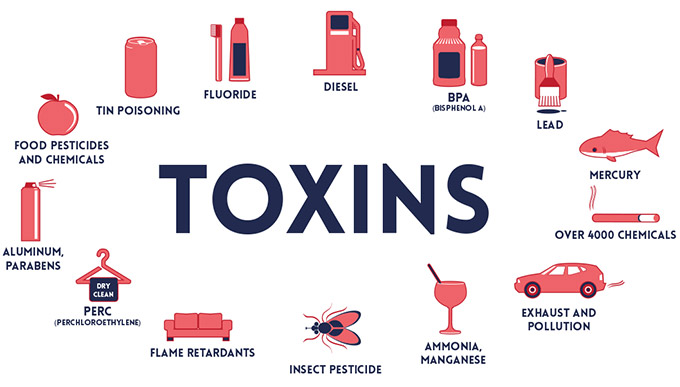

Понякога рискът от дадено токсично вещество може да бъде установен, когато вече е твърде късно и симптомите на влошено здраве започнат да се проявяват. Затова всички токсични вещества трябва да се третират внимателно. Особено внимание трябва да се обръща на такива от тях, за които е доказано, че са вредни за човека. Рискът зависи от токсичността и количеството на дадено вещество.
Токсичност
Това е степента на потенциална вредност на веществото - различно при всяко вещество; различават се и по начина на постъпването на веществата в човешкото тяло, мястото и скоростта на реакцията с организма.
Количество вещество
Това е количеството вещество абсорбирано в тялото, неговият ефект зависи от концентрацията на субсията в различните органи и тъкани, както и от времето на неговото действие. Някои токсични вещества се натрупват в тялото и в тези случаи повторни ниски дози могат да доведат до влошаване на човешкото здраве.